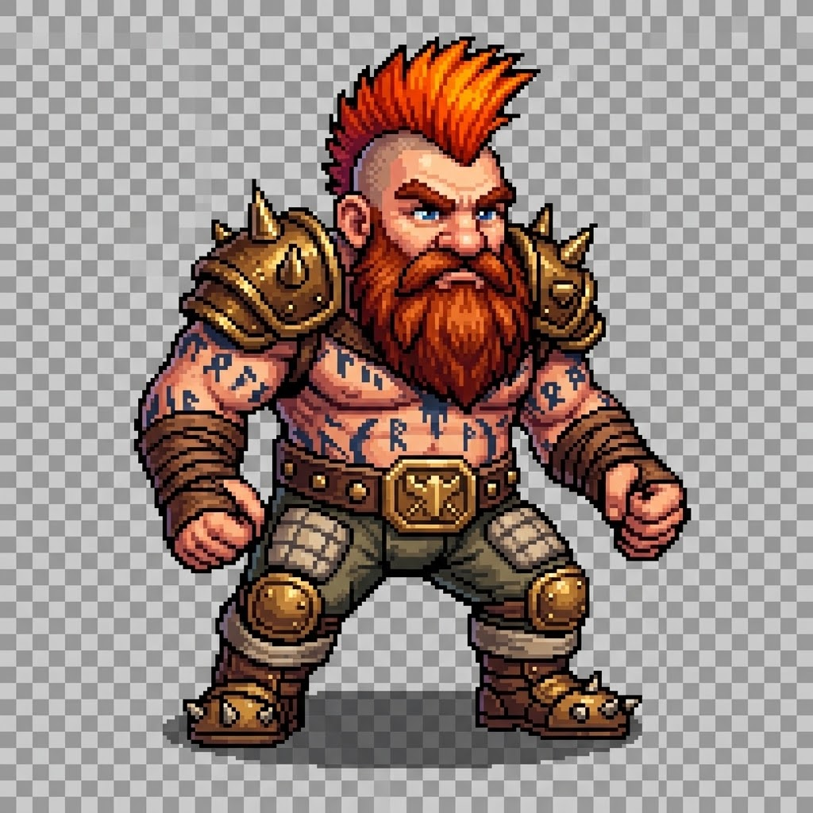

Educational project
A browser-based tabletop football client, built in the open.
Moles Under the Pitch brings a focused HTML5 client and a future game-service boundary into this educational monorepo. The retained Java engine remains intact while the browser client evolves independently.
Open the browser client
Project status
Local browser-client work is available for learning and development.
Sign-in is isolated by Firebase environment and is separate from existing FUMBBL accounts and game behavior.
Independent educational work
Moles Under the Pitch is an independent educational project. It is not affiliated with, endorsed by, sponsored by, or a replacement for FUMBBL. FUMBBL names and services remain their respective owners’ responsibility.